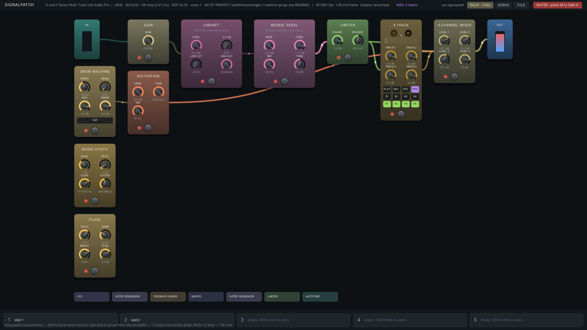
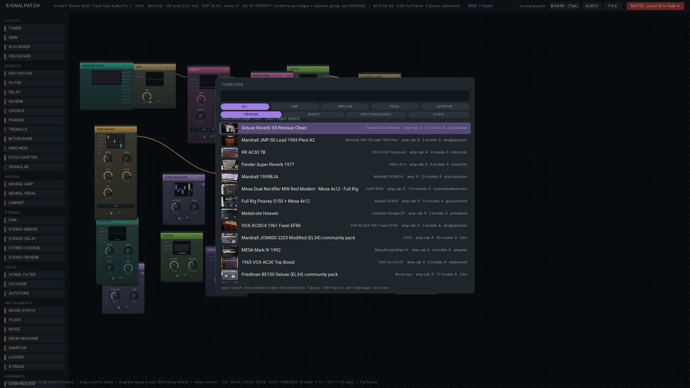

A guitar rig you patch with cables
Amps, cabinets, pedals, a looper, a 4-track, synths and voice effects are modules. Connect them however you like while the sound keeps running.

The rack. Every module is a plate with its own knobs, scope and footswitch. Cables glow with the signal they carry.
46 modules
- Neural
- Neural Amp and Neural Pedal for any .nam capture, Cabinet with two impulse responses and a blend
- Effects
- distortion, filter, delay, reverb, chorus, phaser, tremolo, bitcrusher, ring mod, pitch shifter, granular
- Stereo
- pan, stereo merge, ping-pong delay, stereo chorus, stereo reverb
- Voice
- vowel filter, 12-band vocoder, autotune
- Instruments
- mono synth, pluck, noise, drum machine, sampler, looper, 4-track
- Dynamics
- compressor, limiter, noise gate, Feedback Guard
- Control
- clock, MIDI note, LFO, random, envelope follower, 8-step sequencer, macro, spectral follower, script
- Utility
- tuner, gain, 4-channel mixer, crossfade
How you play it
Two views of one patch
Build in the rack. Press Tab and the same patch is a pedalboard with footswitches. Group several modules into one pedal. Keep five rig slots; knobs glide when you switch.

Amp captures
The neural modules load Neural Amp Modeler captures. The TONE3000 browser finds them, and cabinet impulses, from inside the app. You keep playing while you try them.

Modulation
Every knob has a mod input. A modulated knob moves on screen. The inspector sets a knob's range, curve and mod depth.
Hands-free
MIDI learn on knobs, footswitches, buttons and slots. Expression pedals, relative encoders, a gamepad, and a touch mode for handhelds.
Feedback
Loops are allowed through a Feedback Guard, which keeps them bounded. Patches load muted and fade in when you say so.
Files
Patches are JSON with their recordings beside them. Undo covers every edit. The last session comes back on launch.
Under the panel
Engine
C++20 on headless JUCE 8. Editing compiles a new render plan that replaces the running one at a block boundary. The audio callback does not allocate, lock or block, and a test with an allocation trap checks that on a graph holding every module.
App
GLFW, OpenGL and NanoVG. Module plates are cached and only the live parts are redrawn, so a frame costs a couple of milliseconds.
Status
Version 0.3, and young. Linux with PipeWire or JACK is the main platform. The Windows build is newer and has seen less use. Bug reports are welcome.
Get it
Unzip a release, start SignalPatch and pick your interface under AUDIO. Or build it:
git clone https://github.com/willbearfruits/signalpatch
cd signalpatch
cmake -S . -B build -G Ninja -DCMAKE_BUILD_TYPE=RelWithDebInfo
cmake --build build --parallel
# on a PipeWire desktop
PIPEWIRE_QUANTUM=128/48000 pw-jack ./build/signalpatch_artefacts/RelWithDebInfo/SignalPatchDependencies are fetched by CMake. Windows, Flatpak and realtime priority are covered in BUILDING.md.